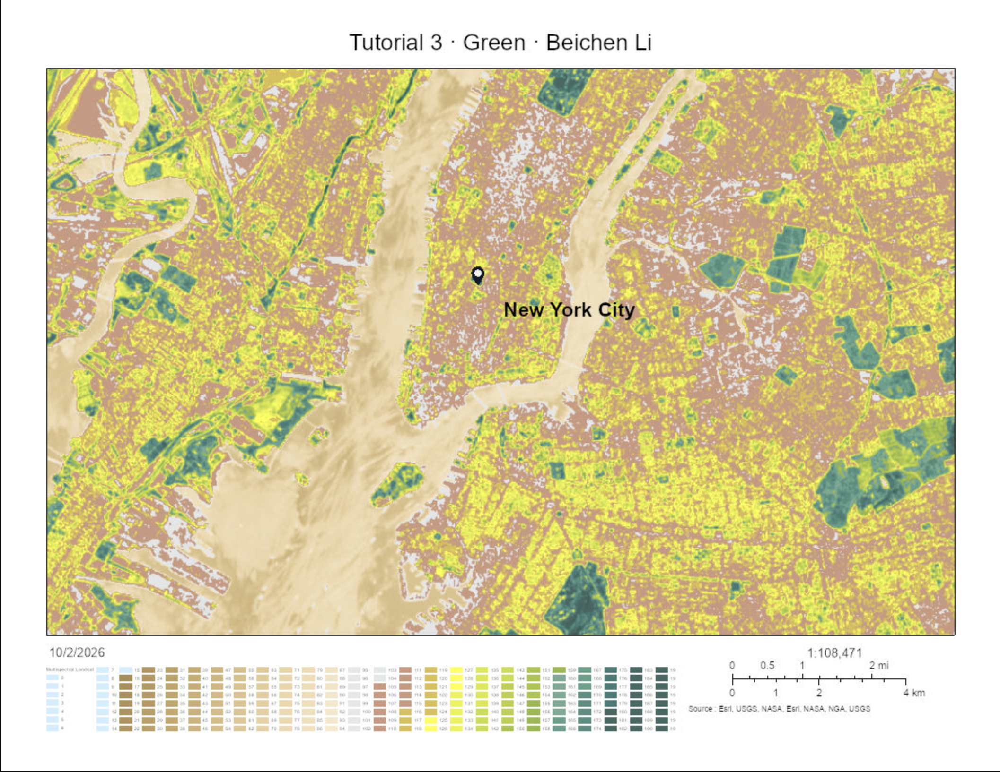
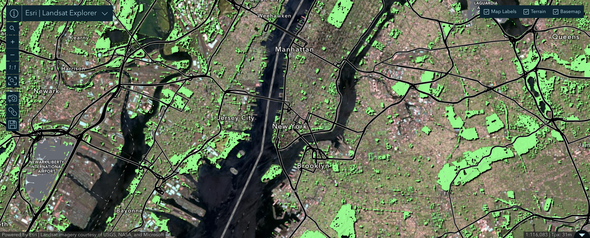

Week 05 · October 2026
Where the water goes
The question
What is the watershed around Bobst Library, New York City, actually shaped by, and how do its boundaries, scale, and water stress appear in the watershed delineation and Aqueduct maps?
The data
I used Multispectral Landsat Imagery Layer in Arcgis Map Viewer, which includes Landsat GLS, Landsat 8, and Landsat 9 imagery for use in visualization and analysis. The Landsat 8 and 9 imagery in this layer is updated daily and is directly sourced from the USGS Landsat collection on AWS. I also used the Landsat 8 and Landsat 9 images shown in Landsat Explorer, acquired on May 12 2026 and July 16 2026, with a scene cloud cover of 1% and 48% respectively. The sensor’s pixel size is 30 m, so each pixel represents about 900 m² on the ground. I examined the Normalized Difference Vegetation Index (NDVI), calculated from red band 4 and near-infrared band 5: (band 5 − band 4) / (band 5 + band 4). The imagery service is publicly viewable without signing in.
The method
In ArcGIS Map Viewer, I added the Multispectral Landsat imagery layer and selected the NDVI Colorized processing template. I kept my site point visible and used Landsat Explorer's spectral profile tool to compare the red and near-infrared reflectance of vegetation and built surfaces. I then switched to NDVI Raw to record the actual index values, because the colorized layer's popup reports a color-table position rather than the NDVI value. Finally, I used the mask tool with a range of 0.5 to 1.0 to highlight relatively green pixels. This threshold identifies vegetation reflectance; it does not certify habitat quality. The evidence section includes the interactive map and static screenshots with a legend and scale bar.
The evidence


What I found
Expectation: In Part 0, I predicted that the water would directly enter drainage system under Washington Square Park and the water would end up in Hudson River. For the tap water, I predicted that it come from Hudson River. However, NYC DEP syas it says the city’s supply comes from upstate reservoirs (about 100 miles away) in the Catskill, Delaware, and Croton systems, often as a blend; it cannot identify Bobst’s exact source from that general statement.
The boundary: At Bobst Library, I first applied MERIT-Hydro data with lower precision but the system auotomatically shifted to higher-precision. I repeated for multiple times and zoomed out the extent and the system constantly generate watershed with higher precision. The higher precision generates a 2 km² delineation with a reported outlet near 40.741, −74.008. The requested coordinate was 40.729716, −73.996762, so the reported outlet is approximately 1.6 km away, calculated from coordinates rounded by the app. However, no river is found in the watershed because the watershed is relatively small and both Hudson River and East River is excluded. Secondly, I adopted the HydroSHEDS (2013) model associated with higher precision, which generates a 59 km² with a reported outlet near 40.73, -73.997, located at the Wards Island Park on Randalls Island. These two answers differed by 29 times. Thirdly, I applied USGS but the system returend a message “Sorry, could not get the watershed boundary”, which is because USGS hydrography is built around gauged stream reaches, and the middle of Manhattan is not the one.
The unit: The Aqueduct record I used for Bobst Library reports baseline annual water stress of 0.06, classified Low (<10%), for a displayed polygon of 57.93 km² (Pfafstetter ID 731300). This is an estimate of withdrawals relative to available renewable water at the sub-basin scale, not a measurement of water inside Bobst. Bobst Library has an area of 39,500 m² = 0.0395 km², the displayed polygon is 57.93 ÷ 0.0395 ≈ 1,467 times the building’s area. Therefore, the ratio is approximately 1,467:1, or the building is about 0.0682% of the polygon. Because The nearby New Jersey polygon has a different ID (731501), so those two records alone do not suggest that Bobst’s basin was split at the state border. To compare untreated connected water and unimproved water, I chose Mississippi - Missouri Basin, Montana where Bozeman city is located at. It returned a untreated connected water value of 0.26, classified LOW(<10%) and a unimproved/no drinking water value 0.02, which is exactly the same value of Manhattan basin.
The crossing: According to NYC DEP, New York City’s drinking-water supply network mainly realy on water conveyed from the upstate reservoir systems toward Manhattan and Bobst (mainly from north towards south), crossing the local surface-drainage boundaries shown by the watershed tool. I found this in NYC DEP’s drinking-water FAQ and water-supply description. The sources establish the direction and the citywide systems, but do not specify which reservoir supplies Bobst at a particular moment; DEP says the mix can change.
What this does not show
I am using the delineated boundary around Bobst Library to stand for where the site’s water actually goes and comes from, and it might fail because the model does not represent New York City’s pipes, tunnels, and aqueducts: it estimates where rain falling on Bobst’s roof would drain across the surface, while the building’s tap water is transported from upstate reservoirs. I am also using the basin’s baseline water stress to stand for whether water at Bobst is adequate, and it might fail because the index measures water volume across a 57.93 km² polygon—about 1,467 times the area of Bobst—while counting water as available without showing whether it is locally accessible, treated, or usable. The delineated boundary is the more dangerous proxy in this entry because its precise outline can easily be mistaken for Bobst’s complete water system, even though it excludes the infrastructure that actually supplies the building.